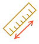
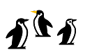
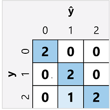

Multiclass classification is used to predict to which of multiple possible classes an observation belongs. As a supervised Machine Learning technique, it follows the same iterative train, validate, and evaluate process as Regression and Binary Classification in which a subset of the training data is held back to validate the trained model.
Example
Multiclass classification algorithms are used to calculate probability values for multiple class labels, enabling a model to predict the most probable class for a given observation.
Let’s explore an example in which we have some observations of penguins, in which the flipper length (x) of each penguin is recorded. For each observation, the data includes the penguin species (y), which is encoded as follows:
- 0: Adelie
- 1: Gentoo
- 2: Chinstrap
Note: A real scenario would include multiple feature (x) values. We’ll use a single feature to keep things simple.
|  |  |
|---|---|
| Flipper length (x) | Species (y) |
| 167 | 0 |
| 172 | 0 |
| 225 | 2 |
| 197 | 1 |
| 189 | 1 |
| 232 | 2 |
| 158 | 0 |
Training a multiclass classification model
To train a multiclass classification model, we need to use an algorithm to fit the training data to a function that calculates a probability value for each possible class. There are two kinds of algorithm you can use to do this:
- One-vs-Rest (OvR) algorithms
- Multinomial algorithms
One-vs-Rest (OvR) algorithms
One-vs-Rest algorithms train a Binary Classification function for each class, each calculating the probability that the observation is an example of the target class. Each function calculates the probability of the observation being a specific class compared to any other class. For our penguin species classification model, the algorithm would essentially create three Binary Classification functions:
- f0(x) = P(y=0 | x)
- f1(x) = P(y=1 | x)
- f2(x) = P(y=2 | x)
Each algorithm produces a sigmoid function that calculates a probability value between 0.0 and 1.0. A model trained using this kind of algorithm predicts the class for the function that produces the highest probability output.
Multinomial algorithms
As an alternative approach is to use a multinomial algorithm, which creates a single function that returns a multi-valued output. The output is a vector (an array of values) that contains the probability distribution for all possible classes - with a probability score for each class which when totaled add up to 1.0:
f(x) =[P(y=0|x), P(y=1|x), P(y=2|x)]
An example of this kind of function is a softmax function, which could produce an output like the following example:
[0.2, 0.3, 0.5]
The elements in the vector represent the probabilities for classes 0, 1, and 2 respectively; so in this case, the class with the highest probability is 2.
Regardless of which type of algorithm is used, the model uses the resulting function to determine the most probable class for a given set of features (x) and predicts the corresponding class label (y).
Evaluating a multiclass classification model
You can evaluate a multiclass classifier by calculating Binary Classification metrics for each individual class. Alternatively, you can calculate aggregate metrics that take all classes into account.
Let’s assume that we’ve validated our multiclass classifier, and obtained the following results:
| Flipper length (x) | Actual species (y) | Predicted species (ŷ) |
|---|---|---|
| 165 | 0 | 0 |
| 171 | 0 | 0 |
| 205 | 2 | 1 |
| 195 | 1 | 1 |
| 183 | 1 | 1 |
| 221 | 2 | 2 |
| 214 | 2 | 2 |
The confusion matrix for a multiclass classifier is similar to that of a binary classifier, except that it shows the number of predictions for each combination of predicted (ŷ) and actual class labels (y):

From this confusion matrix, we can determine the metrics for each individual class as follows:
| Class | TP | TN | FP | FN | Accuracy | Recall | Precision | F1-Score |
|---|---|---|---|---|---|---|---|---|
| 0 | 2 | 5 | 0 | 0 | 1.0 | 1.0 | 1.0 | 1.0 |
| 1 | 2 | 4 | 1 | 0 | 0.86 | 1.0 | 0.67 | 0.8 |
| 2 | 2 | 4 | 0 | 1 | 0.86 | 0.67 | 1.0 | 0.8 |
To calculate the overall accuracy, recall, and precision metrics, you use the total of the TP, TN, FP, and FN metrics:
- Overall accuracy = (13+6)÷(13+6+1+1) = 0.90
- Overall recall = 6÷(6+1) = 0.86
- Overall precision = 6÷(6+1) = 0.86
The overall F1-score is calculated using the overall recall and precision metrics:
- Overall F1-score = (2x0.86x0.86)÷(0.86+0.86) = 0.86